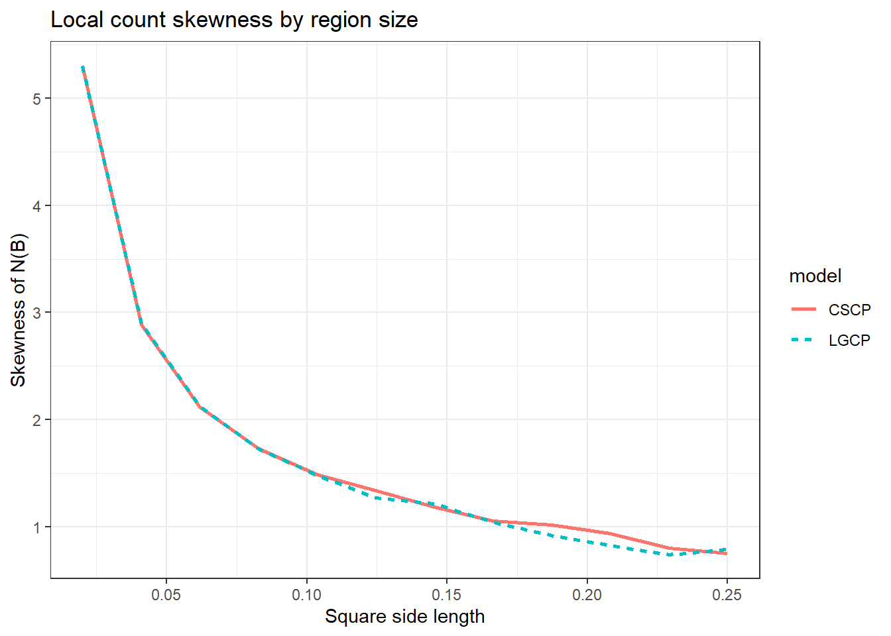

# Local aggregate moment comparison for LGCP vs shifted CSCP
dist2d <- function(x, y) {
sqrt((x[1] - y[1])^2 + (x[2] - y[2])^2)
}
sample_square <- function(n, ell) {
cbind(runif(n, 0, ell), runif(n, 0, ell))
}
# Pair correlation functions
g_lgcp <- function(r, phi, s) {
exp(log(1 + phi) * exp(-r / s))
}
g_cscp <- function(r, phi, s) {
1 + phi * exp(-2 * r / s)
}
# Third-order product density ratios g3
g3_lgcp <- function(r12, r13, r23, phi, s) {
c <- log(1 + phi)
exp(c * exp(-r12 / s) +
c * exp(-r13 / s) +
c * exp(-r23 / s))
}
g3_cscp <- function(r12, r13, r23, phi, s) {
rho12 <- exp(-r12 / s)
rho13 <- exp(-r13 / s)
rho23 <- exp(-r23 / s)
1 +
phi * (rho12^2 + rho13^2 + rho23^2) +
2 * sqrt(2) * phi^(3/2) * rho12 * rho13 * rho23
}
# Monte Carlo moments of A(B)
mc_moments_A <- function(model = c("LGCP", "CSCP"),
ell,
lambda,
phi,
s,
n_mc = 20000) {
model <- match.arg(model)
area <- ell^2
# First moment
EA <- lambda * area
# Second moment via E[g(U,V)]
UV <- sample_square(2 * n_mc, ell)
U <- UV[1:n_mc, , drop = FALSE]
V <- UV[(n_mc + 1):(2 * n_mc), , drop = FALSE]
rUV <- sqrt((U[,1] - V[,1])^2 + (U[,2] - V[,2])^2)
g_vals <- if (model == "LGCP") {
g_lgcp(rUV, phi = phi, s = s)
} else {
g_cscp(rUV, phi = phi, s = s)
}
EA2 <- lambda^2 * area^2 * mean(g_vals)
VarA <- EA2 - EA^2
# Third moment via E[g3(U,V,W)]
XYZ <- sample_square(3 * n_mc, ell)
X <- XYZ[1:n_mc, , drop = FALSE]
Y <- XYZ[(n_mc + 1):(2 * n_mc), , drop = FALSE]
Z <- XYZ[(2 * n_mc + 1):(3 * n_mc), , drop = FALSE]
r12 <- sqrt((X[,1] - Y[,1])^2 + (X[,2] - Y[,2])^2)
r13 <- sqrt((X[,1] - Z[,1])^2 + (X[,2] - Z[,2])^2)
r23 <- sqrt((Y[,1] - Z[,1])^2 + (Y[,2] - Z[,2])^2)
g3_vals <- if (model == "LGCP") {
g3_lgcp(r12, r13, r23, phi = phi, s = s)
} else {
g3_cscp(r12, r13, r23, phi = phi, s = s)
}
EA3 <- lambda^3 * area^3 * mean(g3_vals)
list(
mean_A = EA,
var_A = VarA,
EA2 = EA2,
EA3 = EA3
)
}
# Convert aggregate moments to count moments for N(B)
moments_N_from_A <- function(mean_A, var_A, EA2, EA3) {
# For a Poisson mixture:
# E[N] = E[A]
# E[N^2] = E[A^2] + E[A]
# E[N^3] = E[A^3] + 3E[A^2] + E[A]
EN <- mean_A
EN2 <- EA2 + mean_A
EN3 <- EA3 + 3 * EA2 + mean_A
VarN <- EN2 - EN^2
mu3 <- EN3 - 3 * EN * EN2 + 2 * EN^3
skewN <- mu3 / (VarN^(3/2))
list(
mean_N = EN,
var_N = VarN,
skew_N = skewN
)
}46 🚧 Local Aggregates
🚧 WIP 🚧 WIP🚧 WIP🚧 WIP 🚧 WIP 🚧
Haven’t heard about this:
Instead of just the marginal \(\Lambda(u)\), instead consider:
\[ \Lambda(B) = \int_B\Lambda(u)\ du \]
So it’s somewhere “inbetween” looking at just the marginal, versus the full joint?
I’m assuming that it is going to be more annoying to estimate properties / structure of it from observed point pattern, because it is “containing more information” about the full joint?
So I guess the justification is that while the LGCP and CSCP may look similar pointwise and pairwise, they differ in how intensity accumulates over space?
Z^2 more “spiky” than exp(Z)
Note
The key point is that two fields can have:
- very similar first-order behaviour,
- very similar second-order summaries,
- even somewhat similar pointwise marginals,
while still differing in how mass accumulates over a small neighbourhood.
That is exactly what \(\Lambda(B)\) explores.
Or otherwise stated nicely by the robot:
Even when two Cox process models are matched to have similar first- and second-order structure, they may still differ in the distribution of total intensity over local regions. These local aggregates retain some dependence information that is lost in pointwise marginals, while remaining much simpler than the full joint distribution.
library(dplyr)Warning: package 'dplyr' was built under R version 4.3.3
Attaching package: 'dplyr'The following objects are masked from 'package:stats':
filter, lagThe following objects are masked from 'package:base':
intersect, setdiff, setequal, unionlibrary(purrr)Warning: package 'purrr' was built under R version 4.3.3library(ggplot2)Warning: package 'ggplot2' was built under R version 4.3.3lambda <- 100
phi <- 1.5
s_cscp <- 0.05
s_lgcp <- 0.68 * s_cscp # or whatever matched scale you want
ell_grid <- seq(0.02, 0.25, length.out = 12)
out <- map_dfr(ell_grid, function(ell) {
A_lgcp <- mc_moments_A("LGCP", ell, lambda, phi, s_lgcp, n_mc = 10000)
A_cscp <- mc_moments_A("CSCP", ell, lambda, phi, s_cscp, n_mc = 10000)
N_lgcp <- moments_N_from_A(A_lgcp$mean_A, A_lgcp$var_A, A_lgcp$EA2, A_lgcp$EA3)
N_cscp <- moments_N_from_A(A_cscp$mean_A, A_cscp$var_A, A_cscp$EA2, A_cscp$EA3)
bind_rows(
tibble(
ell = ell,
model = "LGCP",
mean_N = N_lgcp$mean_N,
var_N = N_lgcp$var_N,
skew_N = N_lgcp$skew_N
),
tibble(
ell = ell,
model = "CSCP",
mean_N = N_cscp$mean_N,
var_N = N_cscp$var_N,
skew_N = N_cscp$skew_N
)
)
})
ggplot(out, aes(x = ell, y = skew_N, linetype = model, colour = model)) +
geom_line(linewidth = 1) +
labs(
x = "Square side length",
y = "Skewness of N(B)",
title = "Local count skewness by region size"
) +
theme_bw()